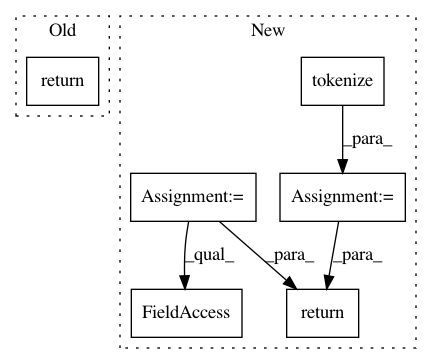

75df2742635b09f97e8d7ec9396750aa17046567,snips_nlu/intent_parser/builtin_intent_parser.py,BuiltinIntentParser,get_intent,#BuiltinIntentParser#Any#,45
Before Change
if len(intents) == 0:
return None
else:
return max(intents, key=lambda x: x["prob"])
def get_entities(self, text, intent=None):
if intent is None:
most_likely_intent = self.get_intent(text)
After Change
if not self.intents:
return None
tokenized_text = tokenize({"text": unicode(text)})
max_proba, best_intent = -1., None
for intent in self.intents:
intent_classifier = IntentClassifier(
intent_config_file=os.path.join(
self.configs_path, "%s.pb" % intent),
gazetteers_dir=self.gazetteers_path
)
proba = intent_classifier.transform(tokenized_text)
if (max_proba < 0.) or (proba > max_proba):
max_proba = proba
best_intent = intent
return {"name": best_intent, "proba": max_proba}
def get_entities(self, text, intent=None):
if intent is None:
intent = self.get_intent(text).get("name")
In pattern: SUPERPATTERN
Frequency: 3
Non-data size: 6
Instances
Project Name: snipsco/snips-nlu
Commit Name: 75df2742635b09f97e8d7ec9396750aa17046567
Time: 2017-03-24
Author: tristan.deleu@gmail.com
File Name: snips_nlu/intent_parser/builtin_intent_parser.py
Class Name: BuiltinIntentParser
Method Name: get_intent
Project Name: allenai/allennlp
Commit Name: 10ea3b36eb24f1c48fc8c6ee4f64048427ffde6d
Time: 2018-05-16
Author: murphp15@tcd.ie
File Name: allennlp/service/predictors/decomposable_attention.py
Class Name: DecomposableAttentionPredictor
Method Name: _json_to_instance
Project Name: snipsco/snips-nlu
Commit Name: 75df2742635b09f97e8d7ec9396750aa17046567
Time: 2017-03-24
Author: tristan.deleu@gmail.com
File Name: snips_nlu/intent_parser/builtin_intent_parser.py
Class Name: BuiltinIntentParser
Method Name: get_entities